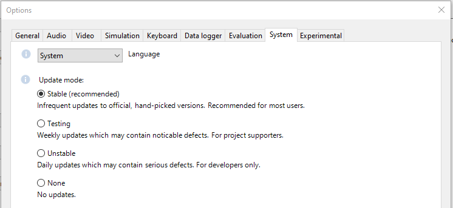
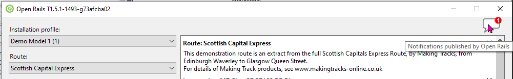
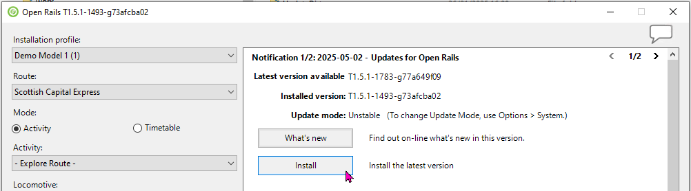

Three Versions of Open Rails
Three versions of Open Rails are readily available to users, as shown below:

For first-time users, we recommend the Stable Version which comes with an installer.
Updater
Whichever version you choose, Open Rails has a mechanism to notify you of new versions and to update Open Rails for you. You will find the settings for this mechanism in Menu > Options > System 
Open Rails will check for updates at most once a day. When it finds one, it raises a red flag in the Notifications icon. 
Use the "What's new" button to find out more about an update or the "Install" button to launch the automatic update process: 
Testing Version
If you follow the Open Rails project on the forums, then you will hear about bug-fixes and new features. These are included in the Unstable Version for developers and testers to try out. Once they have been checked and approved, they are published (on most Fridays) as the latest Testing Version. Any user can easily update to the current weekly Testing Version and benefit from these improvements.
For reference all the Testing Versions (executable and source) can be found in our archive.
Recent Code Changes
-
{%- include changelog.html -%}
The current Testing Version can also be downloaded as a Zip archive: